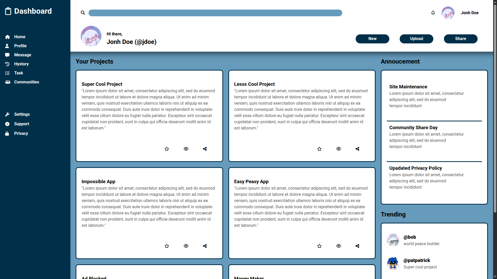
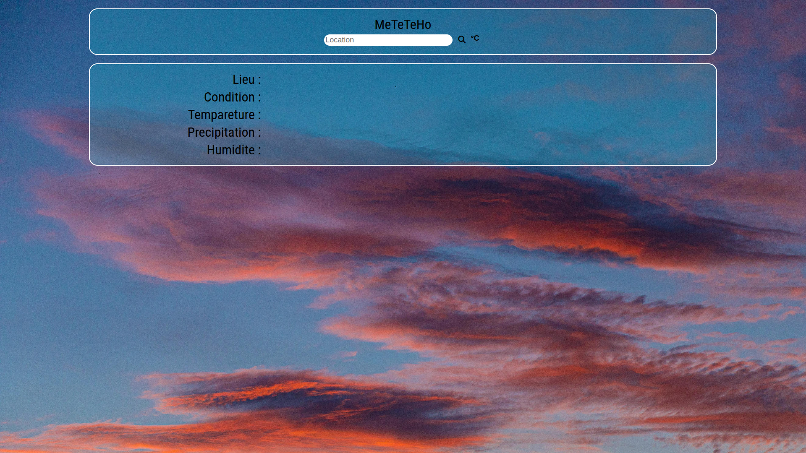
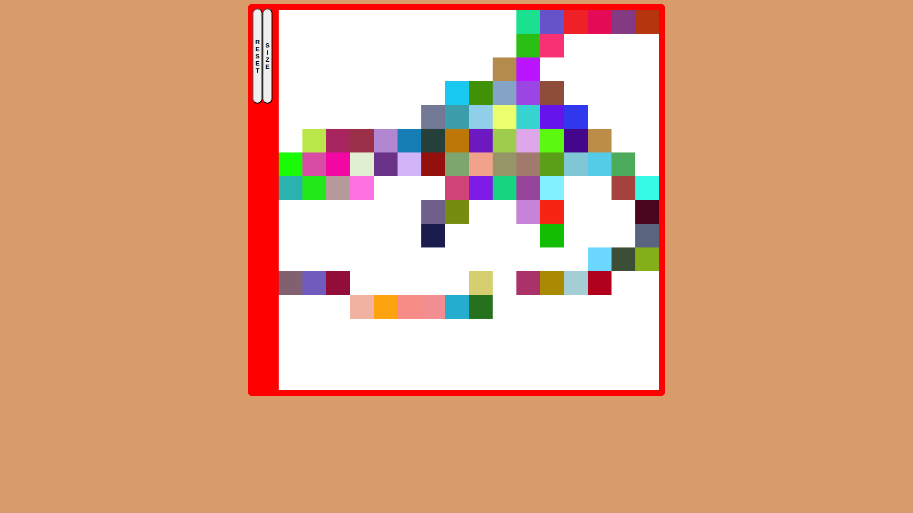
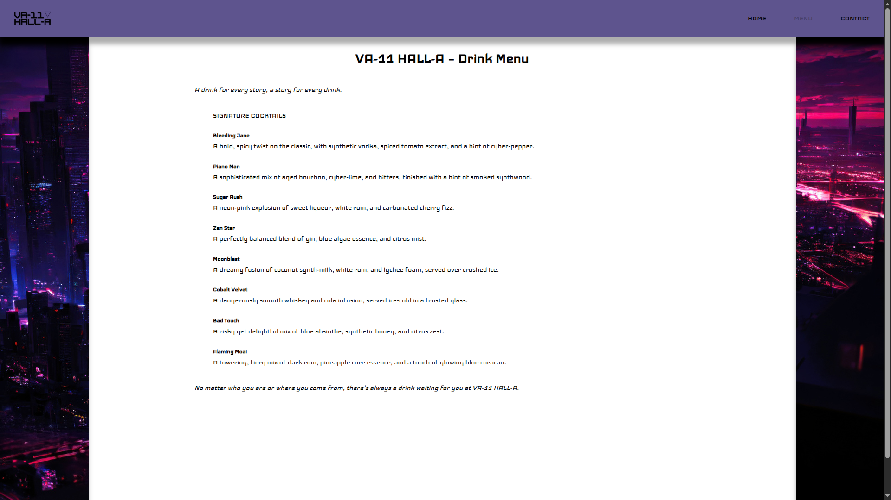
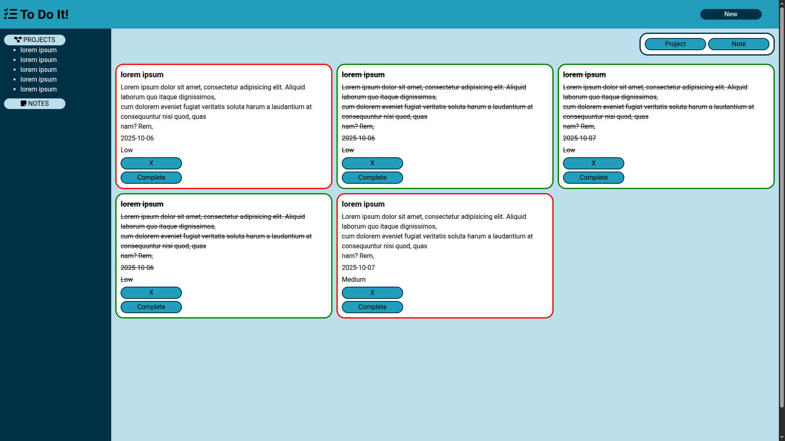

~/projets/adminboard

Adminboard
Maquette d’un réseau social fictif : structure, interface et choix d’ergonomie mis en avant.
en ligne, ouvert aux opportunités
Étudiant BTS:SIO_SISR
Passionné par l'informatique et les nouvelles technologies, je développe mes compétences à travers la réalisation de projets concrets, notamment dans le domaine des réseaux et des systèmes informatiques.
$ whoami
gabriel_da_silva
$ cat stack.txt
linux, css, javascript, git
$ ping opportunités
64 bytes : réponse reçue
J’aime relever de nouveaux défis techniques, apprendre de nouvelles technologies et améliorer en continu la qualité de mon travail. Curieux et motivé, je crée des projets qui allient performance et utilité.
Au cours de mon apprentissage, j'ai réalisé de nombreux projets qui m'ont permis de développer et de renforcer mes compétences dans la conception, la configuration et l'administration de réseaux informatiques. Ces expériences pratiques m'ont également permis d'approfondir mes connaissances en gestion des infrastructures réseau et en résolution de problèmes techniques.
Chaque projet a pour objectif de développer mes compétences techniques.
~/projets/adminboard

Maquette d’un réseau social fictif : structure, interface et choix d’ergonomie mis en avant.
~/projets/meteo

Intégration et gestion de données issues d’une API externe, affichées selon le lieu recherché.
~/projets/etch-a-sketch

Une grille à dessiner pour maîtriser les fondamentaux de JavaScript et les interactions utilisateur.
~/projets/restaurant

Site multipage pour un bar, avec contenu et informations modifiés dynamiquement en JavaScript.
~/projets/to-do-it

Application de tâches et de notes qui conserve les données de l’utilisateur grâce à la mémoire locale.
~/projets/chemin-du-cavalier
Algorithme de plus court chemin pour un cavalier sur un échiquier : graphes, parcours en largeur et structures de données.
Si vous pensez que notre collaboration pourrait être bénéfique pour les deux parties, écrivez-moi.